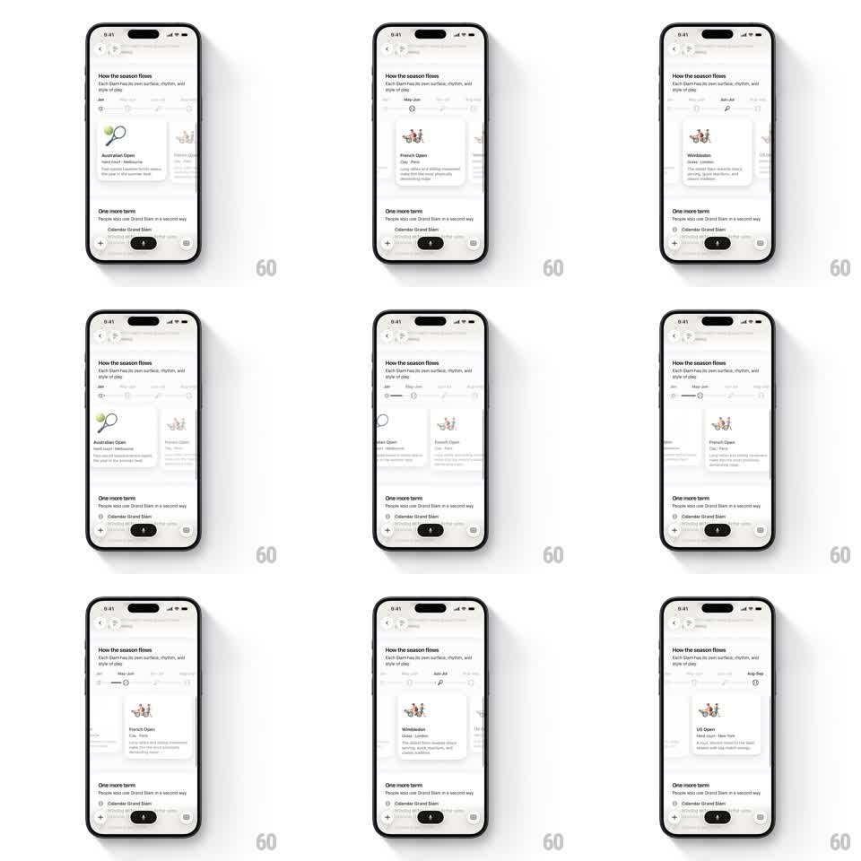

Media
Frame-by-frame

Rebuild this interaction 1:1: Monogram's rich answer carousel - swiping horizontally through a stack of Grand Slam cards inside an AI chat answer scrubs a segmented month timeline above it, so the indicator always tracks the visible card.

Rebuild this interaction 1:1: Monogram's rich answer carousel - swiping horizontally through a stack of Grand Slam cards inside an AI chat answer scrubs a segmented month timeline above it, so the indicator always tracks the visible card.
## Integration
Integration: stack-agnostic spec - springs given as stiffness/damping, timed motions as duration + curve; map every value to your framework and animation library of choice.
## Scene
AI chat answer about the tennis season: intro paragraph ("How the season flows"), then a month timeline strip (Jan - Sep, tick segments), then a horizontal card carousel (Australian Open, French Open, Wimbledon, US Open - each card has a small illustration, tournament name, city, and 2-3 lines of copy). More answer content continues below the carousel.
## Motion spec
Pattern: horizontal swipe carousel synchronized with a segmented progress indicator.
- Cards scroll with 1:1 finger tracking; each card is ~75% of screen width with the next card peeking 20px on the right.
- On release, the carousel snaps to the nearest card (spring ~300/28, settle ~350ms).
- The timeline marker slides to the segment matching the current card (tracks finger 1:1 during the drag, springs to center of the segment on snap).
- Active segment fills dark; inactive segments stay hairline gray; month labels fade in/out with the active range.
- Scroll is horizontal only - vertical page scroll takes over outside the card strip.
## Calibration
- Timeline must track during the drag itself, not just after snap - the coupling is the point.
- Card snap is firm and short; no long deceleration tails.
## Reduced motion
Cards snap without spring physics (200ms ease-out); timeline indicator jumps to the active segment with a 150ms fade.
## Don't miss
- Next-card peek on both edges so the carousel reads as swipeable.
- The timeline is part of the answer content, not a separate page control.